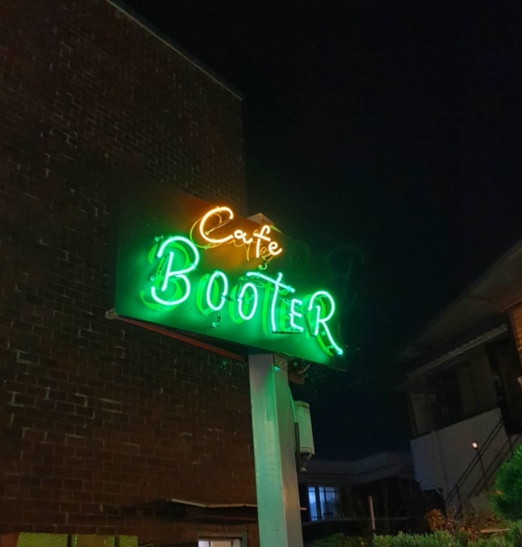

개인적으로 좋아하는 장소

카페"부터"
여긴 수원에서 크로플 맛집으로 소문난 카페입니다 물론 크로플도 맛있지만 여기는 밤에 오면 특히 야외 테라스에서 마시는
커피와 분위기 넘치는 조명으로 인스타 감성이 넘치는 사진찍기 좋은 카페 입니다!!!
동해바다
바다 자체를 좋아하지만, 동해바다 특히 강원도 쪽은 매년 3번이상은 갈 만큼 좋아합니다! 같은 바다인데 어째서 가까운 서해쪽을 가지 않느냐
하고 물으신다면 그이유는,,, 바로 서해바다는 물이 더러워서 입니다 ㅎㅎ; 맑은 동해바다 보면서 물멍때리면 정말 가슴까지 시원해집니다!

대구 삼성라이온즈 파크
이곳은 정말 좋아하는 장소인 삼성라이온즈 파크 야구장입니다 멀어서 자주 가지는 못하지만
언제나 가는 날이면 지금까지도 가슴이 너무 떨려 제대로 잠 들지도 못할정도로 좋아하는 곳 입니다
야구장을 갔다 돌아오는 날이면 코인노래방에서 이수 노래 풀코스 돌린거 마냥 목이 쉬어서 돌아오곤 합니당